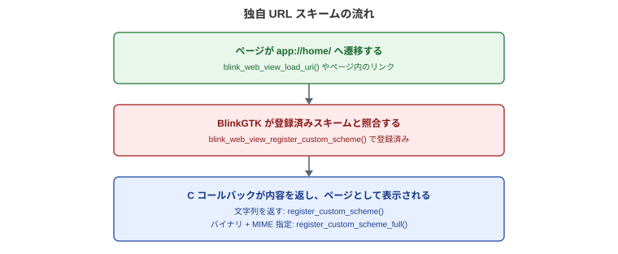
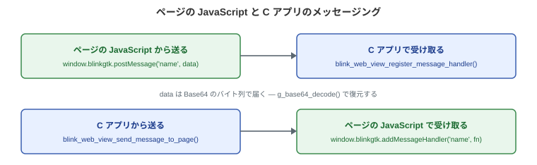

バージョン: 1.2.1-build1
最終更新: 2026-07-30
アプリと Web ページを 双方向に接続する API です。次のことができます。
ebook://book/chapter1.html のような URL に各 API の説明には、シグネチャに加えて動作の詳細
(どのスレッドで・いつ・
誰がメモリを解放するか・エッジケースで何が起きるか)
を記します。これらは
現行バージョンの実装を確認して書かれた記述で、将来のバージョンで改善される
可能性のある点は「現在の実装では」と明示しています。
/* "app" スキームを登録。app://... へのアクセスにアプリが応答する */
static char* on_app_scheme(BlinkWebView *view, const char *uri, gpointer data) {
return g_strdup("<html><body><h1>アプリが返したページ</h1></body></html>");
}
blink_web_view_register_custom_scheme(view, "app", on_app_scheme, NULL);
blink_web_view_load_uri(view, "app://home/");| したいこと | API |
|---|---|
| 独自スキームを登録 (テキスト応答) | blink_web_view_register_custom_scheme() |
| 独自スキームを登録 (バイナリ応答 + MIME 指定) | blink_web_view_register_custom_scheme_full() |
| JS → C のメッセージを受け取る | blink_web_view_register_message_handler() |
| メッセージを GObject シグナルで受け取る (多重購読) | message-received シグナル |
| メッセージハンドラを解除 | blink_web_view_unregister_message_handler() |
| C → JS へメッセージを送る | blink_web_view_send_message_to_page() |
| C から JavaScript を実行する | blink_web_view_execute_javascript() |
| スクリプトを注入 | blink_web_view_inject_user_script() |
| CSS を注入 | blink_web_view_inject_user_stylesheet() |
| 注入したものを全解除 | blink_web_view_remove_all_user_scripts() |

app / blinkgtk / res /
resource / ebook — と、起動前に環境変数BLINKGTK_EXTRA_SCHEMES (カンマ区切り)
で追加した名前だけです。register_custom_scheme()
で任意の名前を後から増やすことはできません<img src="app://...">
などのサブリソース、そして JavaScript のfetch() / XHR
でもコールバックが呼ばれます。だからカスタムスキームの上でURI スキームを登録します。登録したスキームの URL
への読み込みが発生すると、
ネットワークアクセスの代わりにコールバックが呼ばれ、返した文字列が応答に
なります。
シグネチャ:
typedef char* (*BlinkCustomSchemeCallback)(BlinkWebView* web_view,
const char* uri,
gpointer user_data);
void blink_web_view_register_custom_scheme(BlinkWebView* web_view,
const char* scheme,
BlinkCustomSchemeCallback callback,
gpointer user_data);g_strdup()
などで確保します。所有権はエンジンに移り、g_free()
します。応答本文は内部でコピーされるため、0x00
で切れます。画像などのバイナリはregister_custom_scheme_full() を使ってくださいNULL を返すと 空のページ (HTTP 200・本文 0
バイト) になります。callback に NULL
を渡すと、そのスキームの登録を解除しますバイナリを返せる版です。画像・音声・フォントなど、0x00
を含みうるデータは
こちらを使います。
シグネチャ:
typedef GBytes* (*BlinkCustomSchemeBytesCallback)(BlinkWebView* web_view,
const char* uri,
char** out_mime,
gpointer user_data);
void blink_web_view_register_custom_scheme_full(BlinkWebView* web_view,
const char* scheme,
BlinkCustomSchemeBytesCallback callback,
gpointer user_data);GBytes で返します
(長さを自身で持つためバイナリ安全)。g_bytes_unref() しますout_mime には g_strdup("image/jpeg")
のように Content-Type を設定します。g_free() します。NULL
のままにすると URI の拡張子から推定NULL を返した場合はテキスト版と同じく空ページ (200)
です例: 画像をアプリから供給する
static GBytes* on_ebook_scheme(BlinkWebView *view, const char *uri,
char **out_mime, gpointer data) {
if (g_str_has_suffix(uri, "/cover.jpg")) {
gsize len = 0;
gchar *bytes = NULL;
if (g_file_get_contents("/path/to/cover.jpg", &bytes, &len, NULL)) {
*out_mime = g_strdup("image/jpeg");
return g_bytes_new_take(bytes, len);
}
}
return NULL; /* 空ページ (200) になる */
}コールバックには ebook://book/chapter1.xhtml?page=2
のような URI 全体が
渡ります。ホスト部・パス部の分解、クエリの解釈はハンドラの責務です。
実アプリで踏みやすい点が 3 つあります。
%E8%A1%A8%E7%B4%99.xhtml
のようにエンコードされて届きます。g_uri_unescape_string()
で復元しないと、実ファイルと突き合わせたときに..
を含むパスをそのまま通すと配信ルートの外を読まれます。%2e%2e 対策)?
以降は除去しますが、検索などクエリを使う機能がstatic char* path_from_uri(const char *uri) {
const char *p = strstr(uri, "://");
if (!p) return NULL;
const char *slash = strchr(p + 3, '/'); /* ホスト部を飛ばす */
char *path = g_strdup(slash ? slash + 1 : "");
char *q = strpbrk(path, "?#"); /* クエリ・フラグメント除去 */
if (q) *q = '\0';
char *decoded = g_uri_unescape_string(path, NULL); /* 1: percent-decode */
g_free(path);
if (decoded && strstr(decoded, "..")) { /* 2: traversal 拒否 */
g_free(decoded);
return NULL;
}
return decoded; /* 配信ルートからの相対パス */
}| スキーム | 由来 |
|---|---|
app |
汎用 (アプリ本体のコンテンツ) |
ebook |
電子書籍リーダー向け |
res / resource |
汎用リソース |
blinkgtk |
内部リソース参照 |
| (任意の名前) | 起動前に BLINKGTK_EXTRA_SCHEMES=myapp,plugin
で追加 |
なぜ事前登録制か: スキームを「standard scheme
(scheme://host/path の
構造を持ち、相対 URL が解決できる)」「secure context (HTTPS
相当)」として
扱うための分類は、エンジン起動シーケンスの早い段階でしか登録できません。
register_custom_scheme()
は起動後に呼ばれるため、名前の追加はできず、
事前登録済みの名前にハンドラを割り当てる操作になっています。
BLINKGTK_EXTRA_SCHEMES の制限
(現在の実装): 環境変数で追加した
スキームは、ページ内の fetch() からの利用が renderer
側の制限で
弾かれます (<img>
などのサブリソースとナビゲーションは動きます)。
fetch() を使う SPA を配信する場合は組み込み 5
種のいずれかを
使ってください。
ローカルコンテンツは file://
でも表示できますが、file:// のページでは
fetch() が使えず、origin
も特殊です。カスタムスキームは
secure context (HTTPS 相当) の実 origin
として扱われるため、
fetch()・Service Worker・secure context 限定の Web API
がそのまま動きます。
実際に、EPUB リーダー BlinkGTK-Readium は Readium の SPA
と書籍データ全体を
ebook:// で配信することで、file://
では動かなかった fetch() ベースの
アプリケーションをそのまま動かしています。
| 項目 | 現在の実装 |
|---|---|
| 発火する読み込み | ナビゲーション / サブリソース (<img> 等) /
fetch() / XHR |
| コールバックのスレッド | GTK メインスレッド。同期実行 (返るまで UI が止まる) |
| 呼ばれるプロセス | アプリ (ブラウザ) プロセス。レンダラは別プロセスのまま |
| 戻り値の所有権 | エンジンに移る (g_free() / g_bytes_unref()
される) |
| Content-Type | out_mime 指定が最優先。無指定なら拡張子から推定 |
| 拡張子推定 | .html/.htm→text/html、.css、.js/.mjs、.json、.svg、.png、.jpg/.jpeg、.webp、.txt。未知の拡張子は
text/html |
| charset | テキスト系 MIME には常に utf-8 が付く
(変更手段なし) |
NULL 返却 |
空ページ (HTTP 200・0 バイト)。404 にはならない |
| ステータスコード | 常に 200。指定手段なし |
| リダイレクト | 不可 (3xx を返す手段なし)。誘導したい場合は本文の HTML/JS で行う |
| 同一スキームの再登録 | 黙って上書き (後勝ち) |
| 登録の範囲 | プロセス全体。複数 WebView が同じスキームを登録すると最後の登録が全 WebView に適用される |
複数 WebView での注意: 登録の実体はプロセス全体で 1
つです。WebView ごとに
違う内容を返したい場合は、コールバック第 1 引数の web_view
で分岐するか、
スキーム名を分けてください。また、現在の実装では WebView
を破棄しても登録は
自動解除されません。破棄する前に callback=NULL
で解除してください
(解除しないと、破棄済み WebView を指すハンドラが残ります)。
セキュリティの注意: 現在の実装は、要求の発行元
(どのページからの
サブリソース要求か)
を検査しません。秘匿性の高いデータを返すハンドラでは、
外部コンテンツを同じ WebView に表示しない設計にするか、URI
を厳密に検査して
ください。
ページ内の JavaScript に window.blinkgtk
オブジェクトが用意されます。

| 方向 | JavaScript 側 | C 側 |
|---|---|---|
| JS → C | window.blinkgtk.postMessage('name', data) |
blink_web_view_register_message_handler() で受信 |
| C → JS | window.blinkgtk.addMessageHandler('name', fn)
で受信 |
blink_web_view_send_message_to_page() |
window.blinkgtk はページの読み込み完了 (onload)
後に現れます。window.addEventListener('load', ...)
の後、またはwindow
が作り直されるため)。ページ側は遷移のたびにaddMessageHandler を呼び直します。一方 C
側のハンドラは WebView にdata は Base64
のバイト列です。 g_base64_decode() でJS → C のメッセージ受信ハンドラを登録します。
シグネチャ:
typedef void (*BlinkMessageCallback)(const char* name,
const guint8* data,
gsize length,
gpointer user_data);
void blink_web_view_register_message_handler(BlinkWebView* web_view,
const char* name,
BlinkMessageCallback callback,
gpointer user_data);name
はチャネル名です。英数字のみを使ってください
(区切りに使われるmessage-receiveduser_data の寿命管理はアプリの責務です
(解放通知はありません)。unregister
時に自分で解放してJavaScript 側から渡せるデータ
(postMessage(name, data) の data):
| JS 側の型 | 挙動 |
|---|---|
| 文字列 | UTF-8 として Base64 化。日本語も安全 |
ArrayBuffer |
バイナリのまま Base64 化 (バイト列が透過) |
Uint8Array などの TypedArray |
ArrayBuffer と見なされず、JSON
文字列化 ({"0":72,...}) になります。.buffer
を渡してください |
| object / 配列 / 数値 | JSON.stringify して Base64 化。ただし JSON に非
ASCII 文字が含まれると例外になり届きません。日本語を含む object
は自分で JSON.stringify して文字列として渡してください |
null / undefined |
空データ (length 0) |
チャネル別コールバックとは別に、全メッセージが
GObject シグナル
message-received
としても発火します。g_signal_connect() は何個でも
接続できるため、ログ記録のような横断的な購読に向きます。
/* name: チャネル名、data: Base64 文字列 */
static void on_any_message(BlinkWebView *view, const char *name,
const char *data, gpointer user_data) {
g_print("message on channel '%s'\n", name);
}
g_signal_connect(view, "message-received", G_CALLBACK(on_any_message), NULL);シグナルはチャネル名でフィルタされません。購読側で name
を判定して
ください。
登録したハンドラを解除します。
シグネチャ:
void blink_web_view_unregister_message_handler(BlinkWebView* web_view,
const char* name);解除後の挙動に注意: 解除したチャネル
(および最初から未登録のチャネル)
へのメッセージは、エラーにならず黙って捨てられます。開発中に
「メッセージが届かない」ように見えたら、まずチャネル名の一致と登録の有無を
疑ってください。なお message-received
シグナルは解除の影響を受けず
発火し続けます。
C からページ内の JavaScript へメッセージを送ります。
シグネチャ:
void blink_web_view_send_message_to_page(BlinkWebView* web_view,
const char* name,
const char* data);ページ側は先にハンドラを登録しておきます。
<script>
window.addEventListener('load', function () {
window.blinkgtk.addMessageHandler('page-turn', function (data) {
console.log('アプリからの指示:', data);
});
});
</script>届かない条件に注意:
この関数はキューを持ちません。ページの読み込みが
完了する前、またはページ側が addMessageHandler
を呼ぶ前に送ったメッセージは
黙って捨てられます
(戻り値もエラーもありません)。確実に届けるには、
ページ側から準備完了を通知させてから送るのが定石です:
/* ページ側: 準備ができたら ready を送る
* window.blinkgtk.postMessage('ready', '');
* C 側: ready を受けてから送信を始める */
static void on_ready(const char *name, const guint8 *data,
gsize length, gpointer user_data) {
BlinkWebView *view = BLINK_WEB_VIEW(user_data);
blink_web_view_send_message_to_page(view, "config",
"{\"theme\":\"dark\"}");
}
blink_web_view_register_message_handler(BLINK_WEB_VIEW(view), "ready",
on_ready, view);| 項目 | 現在の実装 |
|---|---|
window.blinkgtk の出現時期 |
各ページの onload 完了後 (ナビゲーションごとに再注入) |
| C コールバックのスレッド | GTK メインスレッド |
| C ハンドラの寿命 | WebView と同じ。ナビゲーションを跨いで生存 |
| JS ハンドラの寿命 | ドキュメントと同じ。遷移ごとに再登録が必要 |
| JS → C の符号化 | Base64 (C 側で g_base64_decode()) |
| C → JS の符号化 | なし (生文字列が渡る) |
| ロード完了前の送信 (C → JS) | 黙って破棄 (キューなし) |
| 未登録チャネルへの送信 (JS → C) | 黙って破棄 |
| 同名チャネルの再登録 | 上書き (両方向とも) |
| サイズ制限 | エンジン側の明示的な制限なし。Base64 で約 1.33 倍に膨らむため、大きなデータはカスタムスキームでの配信を検討 |
| iframe | window.blinkgtk はメインフレームにのみ注入。same-origin
の iframe からは parent.blinkgtk で到達可能 |
セキュリティの注意: postMessage
はページ内のあらゆるスクリプトから
呼べます
(発行元の検証はありません)。外部のコンテンツや第三者スクリプトを
表示する WebView では、受信データを信頼せず、C
側で必ず検証してください。
JavaScript をページに注入します。
シグネチャ:
void blink_web_view_inject_user_script(BlinkWebView* web_view,
const char* script,
gboolean inject_at_document_start);inject_at_document_start=FALSE:
現在のページで即時に 1 回実行されますblink_web_view_execute_javascript()
と同等)。以後のページには適用されinject_at_document_start=TRUE: 既知の問題 —
現在のバージョンではload-changed
シグナルのBLINK_LOAD_FINISHED を受けて
execute_javascript() を呼ぶ方法で代替してstatic void on_load(BlinkWebView *view, int ev, const char *uri, gpointer data) {
if (ev == BLINK_LOAD_FINISHED) {
blink_web_view_execute_javascript(view,
"document.title = '[MyApp] ' + document.title;", NULL, NULL);
}
}
g_signal_connect(view, "load-changed", G_CALLBACK(on_load), NULL);CSS を現在のページと以後のページに注入します。
シグネチャ:
void blink_web_view_inject_user_stylesheet(BlinkWebView* web_view,
const char* css);読書アプリの「ダークテーマ」「行間の調整」のように、コンテンツ側を
書き換えずに見た目を変える用途に使えます。動作の詳細:
<style>
要素の追加です。ページ自身のスタイルより/* 冪等な差し替え: 前回の注入分を取り除いてから注入し直す */
blink_web_view_execute_javascript(view,
"var e = document.getElementById('myapp-style'); if (e) e.remove();",
NULL, NULL);
char *js = g_strdup_printf(
"var s = document.createElement('style');"
"s.id = 'myapp-style'; s.textContent = '%s';"
"document.head.appendChild(s);", escaped_css);
blink_web_view_execute_javascript(view, js, NULL, NULL);
g_free(js);登録済みのスクリプトとスタイルシートをすべて
(関数名は scripts ですが
CSS も対象) 解除します。
シグネチャ:
void blink_web_view_remove_all_user_scripts(BlinkWebView* web_view);効果は「以後のページに適用しない」ことです。
現在表示中のページに
既に注入された <style>
は取り除かれません。即時に外したい場合は、上の
冪等パターンのように id
を付けて注入しておき、execute_javascript() で
remove() してください。
現在のページのメインフレームで JavaScript を実行します。
シグネチャ:
typedef void (*BlinkJavaScriptCallback)(const char* result, gpointer user_data);
void blink_web_view_execute_javascript(BlinkWebView* web_view,
const char* script,
BlinkJavaScriptCallback callback,
gpointer user_data);動作の詳細:
callback
を渡すと、式の評価結果が文字列で返ります。NULL ならJSON.stringify()
した文字列をblink_web_view_execute_javascript(view,
"JSON.stringify({title: document.title, y: window.scrollY})",
on_result, NULL);async
関数や fetch() の結果を返り値ではwindow.blinkgtk.postMessage() で送ってくださいload-changed のBLINK_LOAD_COMMITTED 以降いつでも呼べます。エラー時
(WebView 破棄後など)app://home/ をアプリが供給し、ページの準備完了 (ready)
を受けてから設定を
送り、ボタン押下の通知を受け取ります。
#include <blink_gtk/blink_gtk.h>
#include <gtk/gtk.h>
static char* on_app_scheme(BlinkWebView *view, const char *uri, gpointer data) {
return g_strdup(
"<html><body>"
"<h1>アプリ供給ページ</h1>"
"<button onclick=\"window.blinkgtk.postMessage('clicked','hello')\">"
"C 側へ通知</button>"
"<script>"
"window.addEventListener('load', function () {"
" window.blinkgtk.addMessageHandler('config', function (d) {"
" document.body.style.background = d;"
" });"
" window.blinkgtk.postMessage('ready', '');" /* 準備完了を通知 */
"});"
"</script>"
"</body></html>");
}
static void on_message(const char *name, const guint8 *data,
gsize length, gpointer user_data) {
if (g_strcmp0(name, "ready") == 0) {
/* ページの準備ができた — ここからは send が確実に届く */
blink_web_view_send_message_to_page(BLINK_WEB_VIEW(user_data),
"config", "#fffbe6");
return;
}
gsize out_len = 0;
guchar *decoded = g_base64_decode((const gchar *)data, &out_len);
g_print("ページから '%s': %.*s\n", name, (int)out_len, decoded);
g_free(decoded);
}
int main(int argc, char **argv) {
blink_gtk_init(&argc, &argv);
GtkWidget *win = gtk_window_new();
gtk_window_set_default_size(GTK_WINDOW(win), 800, 600);
GtkWidget *view = blink_web_view_new();
gtk_window_set_child(GTK_WINDOW(win), view);
blink_web_view_register_custom_scheme(BLINK_WEB_VIEW(view), "app",
on_app_scheme, NULL);
blink_web_view_register_message_handler(BLINK_WEB_VIEW(view), "ready",
on_message, view);
blink_web_view_register_message_handler(BLINK_WEB_VIEW(view), "clicked",
on_message, view);
gtk_window_present(GTK_WINDOW(win));
blink_web_view_load_uri(BLINK_WEB_VIEW(view), "app://home/");
return blink_gtk_run_main_loop();
}ビルド:
cc -o app-integration app-integration.c $(pkg-config --cflags --libs blinkgtk-0.1)EPUB リーダー BlinkGTK-Readium は、このページの API だけで
「Web アプリを GTK
アプリの中で製品として動かす」構成を実現しています。
設計の参考になる要点:
ebook:// のハンドラが返します。SPA
からのfetch() が同一 origin として動くため、Web
アプリ側の変更はほぼ不要ですregister_custom_scheme_full() —
表紙画像や朗読音声はGBytes + MIME 指定で返します.. を拒否し、パスの先頭セグメントで機能
(本文・本棚・書店) にreadium (リーダー操作)・shelf (本棚)・store (書店)
のようにチャネルを分けると、C 側の| 制限 | 回避策 |
|---|---|
inject_user_script(document_start=TRUE)
が機能しない |
load-changed + execute_javascript() で代替
(上記) |
| カスタムスキームのステータスコードは常に 200 | エラーは本文の HTML で表現 |
| リダイレクト不可 | 本文の HTML / JS で誘導 |
BLINKGTK_EXTRA_SCHEMES のスキームで
fetch() 不可 |
組み込み 5 スキームを使う |
| C → JS 送信はロード完了前は破棄 | ready ハンドシェイク (上記) |
| スキーム登録がプロセス全体で共有 | WebView ごとに内容を変えるなら web_view
引数で分岐、破棄前に解除 |
load-changed などのシグナル| バージョン | 変更 |
|---|---|
| v1.1.0 (2026-07-30) | 実装検証に基づき全面加筆 — スレッド・タイミング・所有権・エッジケースの「動作の詳細」、ready ハンドシェイク等の実践パターン、既知の制限を明記。旧版の「NULL で 404」は実装と異なっていたため是正 (実際は空ページ 200) |
| v1.1.0 | 本ページ初版 (バイナリ対応スキームは v1.1.0、他は v1.0 系から提供) |